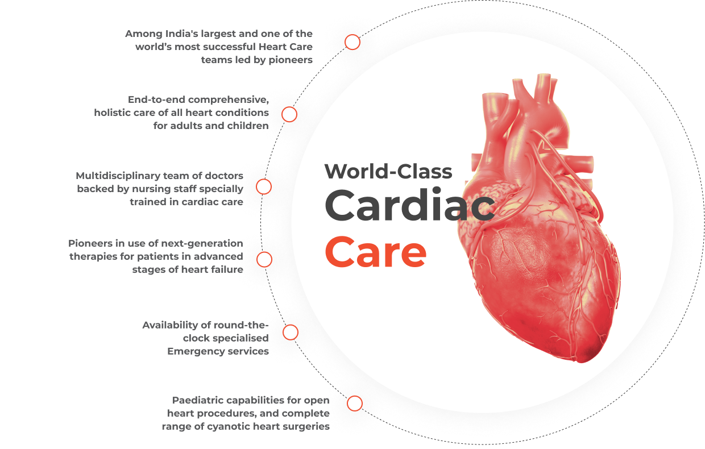

TAVI is a surgical procedure performed to replace a blocked or narrowed aortic valve in people who are at greater risk or too sick for open heart surgery. The TAVR(TAVI) procedure involves the implantation of aortic valve without even eliminating the old, damaged valve with the help of a catheter.
CANCER CARE
 Capsule endoscopy is a medical process that is used to examine the small intestine. During this diagnostic test, the patient is asked to swallow a capsule that has an inbuilt camera. This camera captures endless pictures of the digestive organs, which are displayed on the computer screen.
Capsule endoscopy is a medical process that is used to examine the small intestine. During this diagnostic test, the patient is asked to swallow a capsule that has an inbuilt camera. This camera captures endless pictures of the digestive organs, which are displayed on the computer screen.
Capsule endoscopy is a medical process that is used to examine the small intestine. During this diagnostic test, the patient is asked to swallow a capsule that has an inbuilt camera. This camera captures endless pictures of the digestive organs, which are displayed on the computer screen.